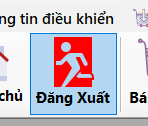
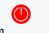

Hướng dẫn sử dụng chức năng Đăng xuất.
1. Mục đích
Form đăng xuất dùng để kết thúc phiên làm việc hiện tại của người
dùng, đảm bảo an toàn và bảo mật cho tài khoản.
2. Khi nào nên đăng xuất?
- Khi bạn hoàn tất công việc trên hệ thống.
- Khi muốn chuyển sang tài khoản khác.
- Khi rời khỏi máy tính hoặc rời khỏi nơi làm việc.
3. Cách thực hiện đăng xuất
-
Nhấn nút Đăng xuất ở góc phải màn hình hoặc
trong thanh menu.
- Xác nhận nếu hệ thống yêu cầu (hộp thoại xác nhận).
- Hệ thống sẽ trở về màn hình đăng nhập.
4. Lưu ý
-
Luôn đăng xuất sau khi sử dụng để tránh người khác truy cập trái
phép.
-
Không nên tắt chương trình trực tiếp bằng nút
X nếu
chưa đăng xuất.
5. Giao diện mẫu
Giao diện có thể có nút Đăng xuất như hình bên dưới:

